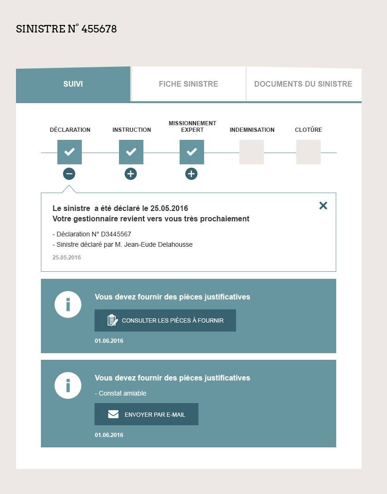

Feuille de route Extranet Flotte 2018
-
Avril 2018 : Version 1.2.16
Améliorations concernant les modules de recherche et amélioration de l'expérience utilisateur lors du parcours de déclaration de sinistre.
- Juin 2018 : Version 1.3.0
Nouvelle version de la déclaration de sinistre avec un suivi temps réel des dossiers :
